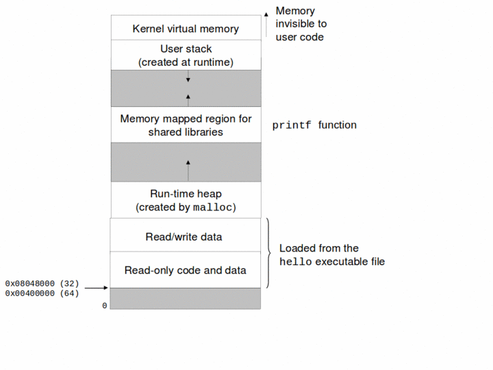

Abstract Data Types
Overview
Information hiding.
Scope.
Modules.
Abstract data types (ADTs).
Lifetime.
Dynamic memory allocation.
Stack ADT.
Information Hiding
Keep details of some code hidden from rest of code as far as possible.
Makes it possible to understand some code locally.
A function is a basic unit of abstraction and provides information hiding. For example, a user of the printf() function is not exposed to the details of how the format string is parsed or how output is performed.
Scope
The scope of an identifier is that region of the program where a use of that identifier refers to the same entity (variable or function). C provides 3 kinds of scope:
- Block Scope
A declaration of an identifier within a {}-enclosed block is visible only from that declaration till the end of the block.
- File Scope
A top-level declaration which uses the static keyword is visible only from that declaration till the end of the file. If another file has another static declaration for the same identifier, then that declaration is totally independent.
- Program or Global Scope
A top-level declaration which may or may not make explicit use of the extern keyword and does not use the static keyword is visible across the entire program. Unfortunately, it is necessary to follow some simple rules to ensure that different files agree on the declaration.
Scope Example
int programScope = 0; //program scope static int fileScope; //file scoped variable. int f(int val) { //program scope function ...val... //reference to val parameter ...fileScope... //ref to fileScope variable ...programScope... //ref to programScope variable if (...) { double val; //hides outer declaration ...val... //reference to val within if-block } ...val... //reference to val parameter }
Name Spaces
The same identifier can be used for different purposes, even in the same scope, if the uses are in different name spaces. The different name spaces in C are:
Labels. The identifier occurs before a : or after the
gotokeyword.struct, union and enum tags. The identifier occurs immediately after a struct, union or enum keywords.
A separate name space for the fields of each struct or union. The identifier is always preceeded by a variable which specifies the type of the struct or union as in s.field or s->field.
Objects (variables), functions, typedef and enum-constants. No syntactic context like above; can call this the default namespace.
Name Spaces Example
int f(int a) { //def f in default namespace typedef struct f { //def f in tag namespace int f; //def f as field in F struct's. struct f *a; //def a as field; f refs struct tag } F; F s; f: /* f is a label */ ... s.a->f //s refs default namespace; a, f are field refs f(a + 1); //default namespace f() and a; a is param goto f; //ref label }
Modules
Many programming languages provide some kind of module construct for information hiding.
All that the clients of a module care about is the specification for a module. All implementation details of the module are hidden from the clients.
This allows the module's implementation to be changed without affecting clients as long as the specification does not change.
Using some kind of module system is absolutely essential for managing the complexity of large programs.
Modules in C
C does not explicitly provide a module system, but it is still possible to implement modules in C by following a few simple rules.
Build each module using two separate module.h and module.c files.
The module.h file contains the module's exports. It should only contain declarations of types, functions and constants. Normally, it will not contain function or variable definitions.
The module.c file implements the module and will provide definitions for the declarations in module.h. All functions or variables which are local to the module should be declared static.
Modules in C Continued
Clients will access the module by #include'ing the module.h file. This will give them compile-time access to the module's declarations.
The module.c file should also #include the module.h file. This ensures that the definitions in module.c are consistent with the declarations in module.h.
When the program is linked together, the module.o file produced by the compiler from the module.c file is included in the final executable. This ensures that the actual code for the module definitions is available to all clients.
Generic Pointers
In C void * is used as a generic data pointer, pointing to an element of unspecified type.
Before a generic pointer can be dereferenced, it must be cast as a pointer to a specific type.
Often (but not always) a C int can fit within a pointer.
Often (but not always) code pointers are same size as data pointers.
Abstract Data Types
An ADT hides the implementation of a type. All that is visible to clients are the operations supported by the type.
Stack ADT specification file stack.h
Lifetime
- Program Lifetime
Values assigned to variables declared outside any function have lifetime equal to that of the entire program. This is the case whether the variable is declared extern or static. This is also the case for variables declared extern or static within a function.
- Block Lifetime
Values assigned to variables declared within a block (without extern or static modifiers) have lifetime equal to that of the block. Those values disappear when execution of the block terminates. If the block is re-entered, new values are created.
Block lifetime variables are allocated from a memory area called the stack.
Scope is a static concept; it depends on the static structure of the program code. Lifetime is a dynamic concept, depending on the dynamic behavior of the program when it is executing.
Problem with Block Lifetime
int * danglingPointer() { int v = 42; //disappears after function execution return &v; //&v meaningless once function returns }
Program may appear to work because the memory pointed to by the returned dangling pointer may not have yet been repurposed.
Dynamic Memory Allocation
When program or block lifetime is not sufficient, dynamic memory allocation needs to be used:
-
void *malloc(size_t size) Returns a pointer to size bytes of memory freshly allocated from the heap. The memory is not initialized in any way.
-
void *realloc(void *p, size_t size) Adjust size of previously allocated memory pointed to by p to size and returns pointer to reallocated memory (which may be different from p). The contents of the returned memory matches that of the old memory to the minimum of the old and new size. If p is NULL, then like malloc(). If p is not NULL, then it must have been returned by a previous call to malloc(), realloc() or calloc().
Dynamic Memory Allocation Routines Continued
-
void *calloc(size_t nmemb, size_t size) Returns pointer to newly allocated heap memory for an array of nmemb elements of size bytes. The allocated memory is initialized to all 0's.
-
void free(void *p) Free memory pointed to by p. p must be a previous return value of malloc(), realloc() or calloc() or NULL. Behavior undefined if free() called multiple times for the same memory block.
Dynamic Memory Allocation Routines
Dynamically allocated memory is allocated from a memory area called the heap.
Pointer to newly allocated memory is aligned suitably for any kind of variable.
Allocation routines return NULL on failure. Must check return value.
Note that free() call does not require passing size of memory block being free'd.
Some memory overhead.
Lot of programmer overhead: programmer must remember to free memory when no longer needed. Significant source of bugs.
Unix Virtual Memory Layout
Stack Module Implementation
Stack ADT implementation file stack.c